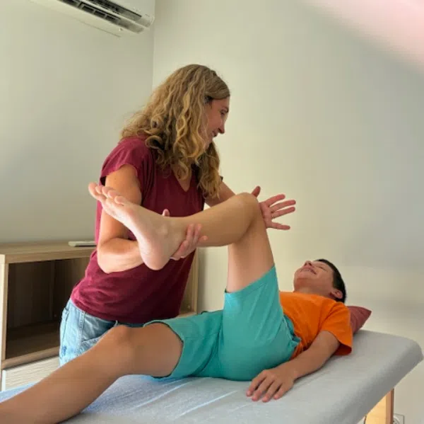
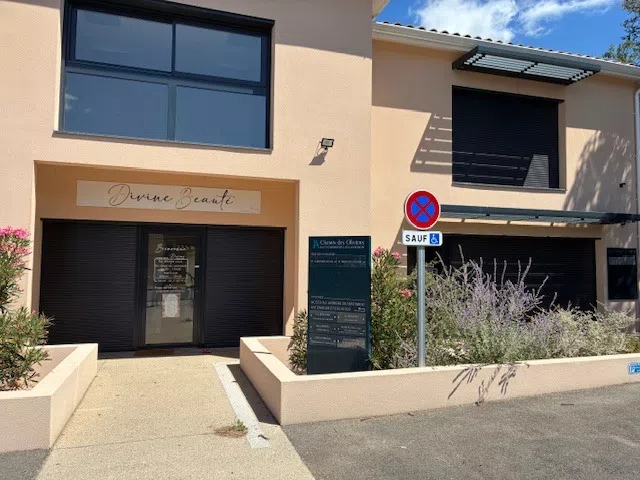

Kinésiologue certifiée · Morières-lès-Avignon
Séances personnalisées pour adultes, adolescents et enfants
à Morières-lès-Avignon, à 10 min d'Avignon

Ancienne Professeur des Écoles, j'ai découvert la kinésiologie à travers ma propre expérience. Touchée par ses bienfaits profonds, j'ai décidé de me former rigoureusement au sein de l'école EKIVIE — 633 heures de formation certifiée.
Aujourd'hui, j'accompagne adultes, adolescents et enfants vers un mieux-être durable, en douceur et sans jugement. Mon cabinet se situe à Morières-lès-Avignon, à une dizaine de minutes d'Avignon.
Retrouvez une harmonie entre corps et esprit pour une meilleure qualité de vie au quotidien.
Identifiez et libérez les émotions enfouies qui freinent votre épanouissement.
Renforcez votre estime personnelle et affirmez-vous dans toutes les sphères de votre vie.
Développez des ressources intérieures pour faire face aux tensions du quotidien.
Réduisez l'anxiété et retrouvez un état de calme et de sécurité intérieure.
Accompagnez enfants et adolescents pour lever les blocages qui perturbent leurs apprentissages.
On commence par un temps d'échange pour identifier vos préoccupations, vos objectifs et ce que vous souhaitez améliorer dans votre vie.
Par des tests précis sur le corps, la kinésiologie révèle les blocages inconscients qui influencent votre bien-être physique et émotionnel.
Mouvements doux, stimulation de points d'acupressure, techniques de libération du stress — tout est adapté à votre rythme et à vos besoins.
Chaque séance se conclut par un temps de retour sur soi, pour ancrer les changements et repartir ressourcé(e).
Séances en cabinet, sur rendez-vous
Remboursement possible selon votre mutuelle
4,9 / 5 sur 14 avis vérifiés
« Je remercie chaleureusement Sandra pour son accompagnement lors de notre première séance ensemble. Sandra est une professionnelle très compétente, bienveillante et à l'écoute. Ma problématique a été très justement identifiée et le travail réalisé pendant cette séance m'a permis de ressentir des bénéfices immédiats. Je la consulterai à nouveau les yeux fermés ! »
« J'ai fait deux séances sur des thèmes différents : accepter et pardonner pour la première, et le détachement pour la seconde. Je traînais ces blessures depuis bien trop longtemps et je voulais enfin m'en libérer. Sandra a su m'aider à affronter, comprendre et avancer pour aller mieux ! Pour celles et ceux qui hésitent, je peux vous dire que cela change vraiment une vie lorsque l'on est prêt à affronter sa part d'ombre. Alors encore un grand merci à Sandra ! »
« Sandra est une professionnelle douce, à l'écoute et d'une grande bienveillance. Je ne connaissais pas cette pratique et cela a été très bénéfique pour moi et également pour mon fils que j'ai emmené consulter aussi. Merci encore à vous Sandra. »
« J'ai découvert la kinésiologie récemment et cette séance m'a fait énormément de bien. J'ai été accueillie avec beaucoup de douceur et d'attention. Cela m'a permis de relâcher des tensions et de mieux me recentrer. Je recommande vivement cette approche et Sandra 👍 »
« Praticienne au top. De l'accueil à l'écoute en passant par la qualité de la séance, je me suis sentie à l'aise dès le début pour confier mes soucis, et la séance a été constructive et bénéfique. Encore merci Sandra. »
« Sandra est une professionnelle à l'écoute. Je me suis sentie à l'aise avec elle malgré la petite appréhension de ce genre de rendez-vous. Je la remercie infiniment et vous la recommande sans hésiter ! »
« Praticienne très à l'écoute, séances très constructives et bénéfiques. Je la recommande fortement ! »
« Très à l'écoute. Mon fils âgé de 13 ans se sent mieux depuis ses séances. »
« J'ai apprécié ce moment, ça m'a remué mais c'était nécessaire — à réitérer. Merci. »
« Très gentille, très humaine. »
« Très bonne séance. »
« Sandra a su être à l'écoute et surtout détecter elle-même les besoins de notre famille entière. Son approche est pertinente et douce. »
« Très à l'écoute et très professionnelle. La séance est personnalisée en fonction de vos besoins. »
« Une très belle personne, à l'écoute et bienveillante. La séance a été très bénéfique pour mon fils et moi, nous la recommandons à 100% 🙏 »
La kinésiologie est une pratique de bien-être qui utilise le test musculaire pour identifier les blocages physiques, émotionnels ou énergétiques à l'origine du stress, de l'anxiété ou d'un manque de confiance en soi, puis les libérer par des techniques douces et naturelles.
Ce sont deux pratiques différentes malgré la similitude des noms. La kinésithérapie est une profession médicale centrée sur la rééducation physique. La kinésiologie est une approche de bien-être non médicale qui s'intéresse aux blocages émotionnels et au stress à travers le test musculaire.
Oui, de nombreuses mutuelles remboursent tout ou partie des séances de kinésiologie au titre de la médecine douce. Le cabinet de Sandra Champeau à Morières-lès-Avignon est reconnu par 8 mutuelles partenaires.
Cela dépend de chaque personne et de la nature des blocages à traiter. Certaines personnes ressentent un mieux-être dès la première séance, tandis que d'autres bénéficient d'un suivi sur plusieurs séances espacées de quelques semaines.
Oui, la kinésiologie est adaptée aux enfants, adolescents et adultes. Les séances sont ajustées à l'âge et aux besoins de chacun, notamment pour le stress scolaire, la confiance en soi ou les troubles émotionnels.
1 A chemin des Oliviers
84310 Morières-lès-Avignon
Parking gratuit disponible sur place
Carte bancaire et espèces acceptés
Le cabinet est à Morières-lès-Avignon, facilement accessible depuis Avignon, Le Pontet, Vedène, Montfavet, Caumont-sur-Durance, Châteauneuf-de-Gadagne et Saint-Saturnin-lès-Avignon.
Prendre rendez-vous en ligne